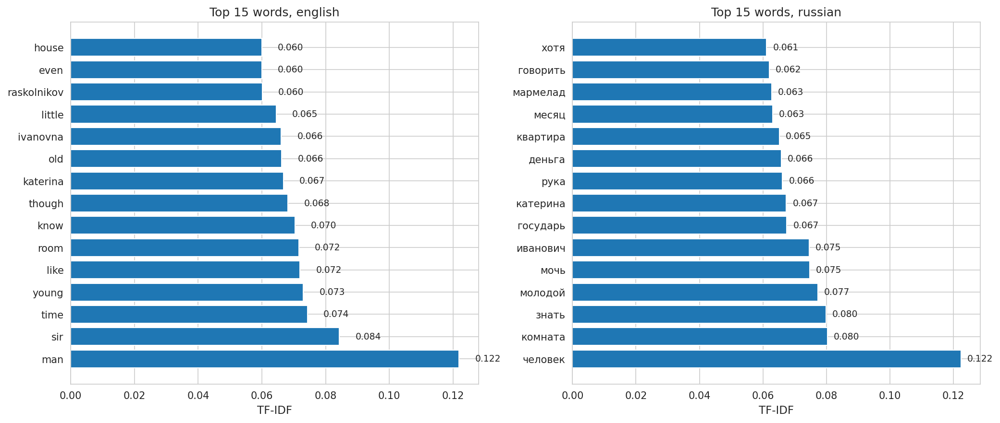
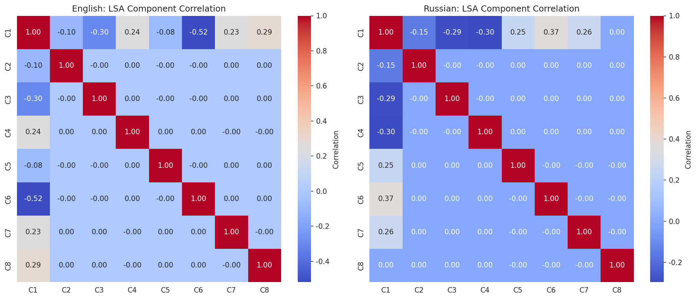
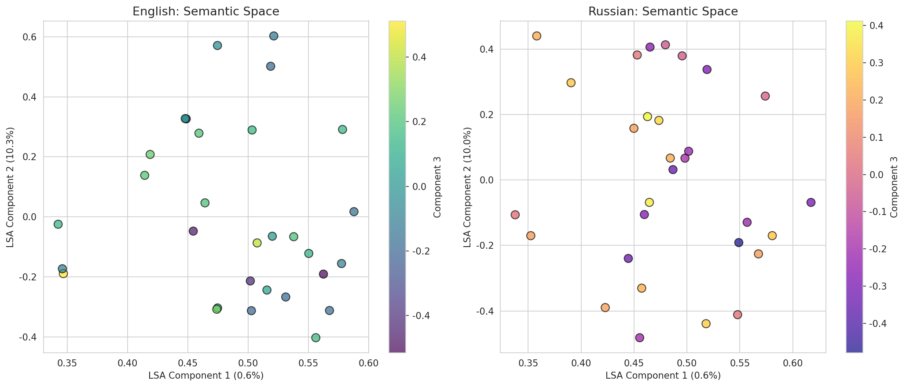

TF-IDF + LSA (SVD)
| # | Слово | Вес |
|---|---|---|
| 1 | человек | 0.1223 |
| 2 | комната | 0.0803 |
| 3 | знать | 0.0798 |
| 4 | молодой | 0.0773 |
| 5 | мочь | 0.0747 |
| 6 | иванович | 0.0745 |
| 7 | государь | 0.0675 |
| 8 | катерина | 0.0673 |
| 9 | рука | 0.0661 |
| 10 | деньга | 0.0658 |
| 11 | квартира | 0.0652 |
| 12 | месяц | 0.0630 |
| 13 | мармелад | 0.0627 |
| 14 | говорить | 0.0620 |
| 15 | хотя | 0.0612 |
| 16 | рубль | 0.0603 |
| 17 | лестница | 0.0589 |
| 18 | пойти | 0.0575 |
| 19 | лицо | 0.0566 |
| 20 | бояться | 0.0565 |
| # | Word | Weight |
|---|---|---|
| 1 | man | 0.1219 |
| 2 | sir | 0.0843 |
| 3 | time | 0.0743 |
| 4 | young | 0.0730 |
| 5 | like | 0.0720 |
| 6 | room | 0.0716 |
| 7 | know | 0.0704 |
| 8 | though | 0.0682 |
| 9 | katerina | 0.0668 |
| 10 | old | 0.0662 |
| 11 | ivanovna | 0.0661 |
| 12 | little | 0.0645 |
| 13 | raskolnikov | 0.0601 |
| 14 | even | 0.0600 |
| 15 | house | 0.0600 |
| 16 | yes | 0.0597 |
| 17 | marmeladov | 0.0595 |
| 18 | year | 0.0586 |
| 19 | understand | 0.0586 |
| 20 | woman | 0.0564 |

Выводы: В русском топе 10 существительных, в основном они связаны с человеком ("человек", "рука", "лицо"), с деньгами, которые являются мотивом для действий главного героя, и с пространством, которое играет отражает внутрениий мир героев романе. Глаголы "знать", "мочь", "говорить", в целом, нейтральные, но "бояться" уже лучше отражает сюжет произведения. В английском топе есть несколько стоп-слов, которые не были исключены ("yes"). Тем не менее, семантические группы те же (человек, его окружение, его характеристика вроде "young", глагол "understand").
| Тема | Доля | Накоплено |
|---|---|---|
| 1 | 0.6% | 0.6% |
| 2 | 10.0% | 10.6% |
| 3 | 8.3% | 18.9% |
| 4 | 7.7% | 26.6% |
| 5 | 7.2% | 33.8% |
| 6 | 5.7% | 39.5% |
| 7 | 5.3% | 44.8% |
| 8 | 5.1% | 49.9% |
| Topic | Ratio | Cumulative |
|---|---|---|
| 1 | 0.6% | 0.6% |
| 2 | 10.3% | 10.9% |
| 3 | 8.0% | 18.9% |
| 4 | 7.1% | 26.0% |
| 5 | 6.2% | 32.2% |
| 6 | 6.0% | 38.2% |
| 7 | 5.5% | 43.7% |
| 8 | 5.2% | 48.9% |
В целом, оба анализа показывают важность второй темы -- именно в ней произошло убийство, кульминация сюжета.


Выводы: Здесь можно увидеть, что первые три главные компоненты текстов двух языков(трех главных тем) имеют небольшие отличия в распределении. 3-я компонента для русского текста охватывает 7.2% в то время как для английского -- 6.2, первые две также имеют различный разброс данных. Из графика корреляций можно сделать вывод, что первая компонента коррелирует с другими сильнее остальных, а особенно -- с 6-й, в русском языке. В английском же это 3-я и 4-я компоненты (расскажу об этом подробнее на защите).
| Тема | Ключевые слова |
|---|---|
| 1 | человек, комната, молодой, знать, иванович, мочь, государь, катерина, рука, месяц |
| 2 | улица, лестница, бояться, встреча, человек, молодой, комната, старуха, несмотря, стоять |
| 3 | квартира, лестница, дверь, катерина, пить, хозяйка, комната, иванович, соня, бояться |
| 4 | рубль, делать, мочь, взять, копейка, месяц, стать, прийти, деньга, хороший |
| 5 | комната, батюшка, старуха, рубль, дверь, деньга, раскольников, вперёд, волос, старый |
| 6 | квартира, жить, господин, мочь, хозяйка, знать, лебезятников, комната, рубль, действительно |
| 7 | иванович, катерина, квартира, человек, батюшка, молодой, старуха, служба, пожалеть, жёлтый |
| 8 | квартира, пожалеть, соня, деньга, коли, выходить, действительно, милостивый, рука, лестница |
| Topic | Key words |
|---|---|
| 1 | man, sir, know, room, time, katerina, ivanovna, young, like, though |
| 2 | old, woman, door, good, looked, like, eye, two, young, something |
| 3 | year, wife, dostoevsky, street, upon, man, feeling, suddenly, left, time |
| 4 | man, street, know, yes, go, young, landlady, katerina, sonia, matter |
| 5 | dostoevsky, year, katerina, work, room, ivanovna, time, sonia, house, hair |
| 6 | dostoevsky, landlady, rouble, nothing, two, year, hear, get, made, young |
| 7 | house, year, matter, go, going, step, upon, give, people, street |
| 8 | drink, education, woman, old, know, feeling, young, yet, man, sir |
Предыдущий анализ мог бы стать более интерпретируемым благодаря выделению ключевых слов для каждой темы. Тем не менее, выбранный нами метод не полностью описывает содержание этих тем, так как содержит довольно много нейтральной лексики. Можно предполагать, исходя из сюжета, к каким эпизодам относят какие ключевые слова, например, о кульминации в 3-й теме можно догадаться по глаголу "бояться", "старуха" в русском варианте и "old", "woman" в английском. В перспективы исследования можно включить исследование именно эмоционально окрашенной лексики.
| Персонаж | Упоминаний |
|---|---|
| Раскольников | 978 |
| Разумихин | 379 |
| Соня | 322 |
| Дуня | 290 |
| Порфирий | 134 |
| Лужин | 115 |
| Мармеладов | 41 |
| Character | Mentions |
|---|---|
| Raskolnikov | 883 |
| Sonia | 478 |
| Dounia | 440 |
| Razumihin | 399 |
| Porfiry | 206 |
| Luzhin | 113 |
| Marmeladov | 42 |
Выводы: Частота упоминания персонажей, в целом, практически не различается.